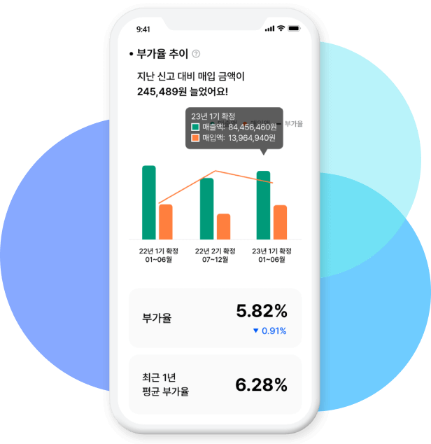

5천명의 사장님, 평균 0만원 절세
왜 많이 나올까 ?
부가세 절세 비법을 알려드립니다!내가 놓친 세금
절세액은 얼마일까 ?전국 사장님이 조회하신 누적 부가세 절세액은
0억원 입니다.
세금 절세액,
언제 조회해야 하나요 ?

왜 특별할까요 ?
20만명의 사업자 분석을 통한 부가세 절세 진단 AI기술을 활용합니다.
부가세 전문 세무사를 통한 절세 진단 보고서를 제공합니다.
지난 세금과 더불어 앞으로는 매월 예상 세금을 미리 알려드립니다.